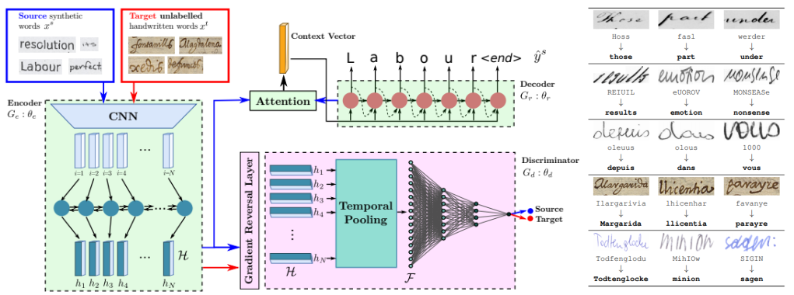
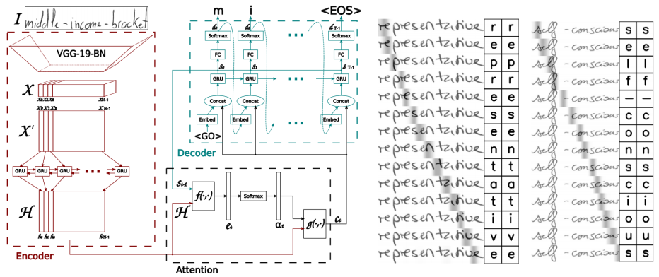

Yo
Lei Kang (PhD student)
Computer Vision Center, Barcelona and omni:us, Berlin
Email: lkang [at] cvc [dot] uab [dot] es
Postal Address: Centre de Visió per Computador, Campus UAB, Edifici O, 08193 - Bellaterra (Barcelona), Spain
Bio
I am a fourth-year industrial PhD student in Pattern Recognition and Document Analysis Group at Computer Vision Center and research group at omni:us. I am advised by Marçal Rusiñol, Alicia Fornés and Mauricio Villegas. My research topics are based on handwritten document analysis, specifically, sequence-to-sequence based approaches for handwriting recognition, multi-writer adaptation, language modelling, GANs-based handwriting generation, etc.
News
- March 2020, oral presentation, WACV20, Snowmass, US
Publications

Unsupervised Writer Adaptation for Synthetic-to-Real Handwritten Word Recognition.
Lei Kang, Marçal Rusiñol, Alicia Fornés, Pau Riba and Mauricio Villegas.
In Proceedings of the Winter Conference on Applications of Computer Vision, WACV20 2020.

Convolve, Attend and Spell: An Attention-based Sequence-to-Sequence Model for Handwritten Word Recognition.
Lei Kang, J.Ignacio Toledo, Pau Riba, Mauricio Villegas, Alicia Fornés and Marçal Rusiñol.
In Proceedings of the German Conference on Pattern Recognition, GCPR18 2018.
Reviewer
- Journal reviewer: Pattern Recognition, Machine Vision and Applications
- Conference reviewer: DAS